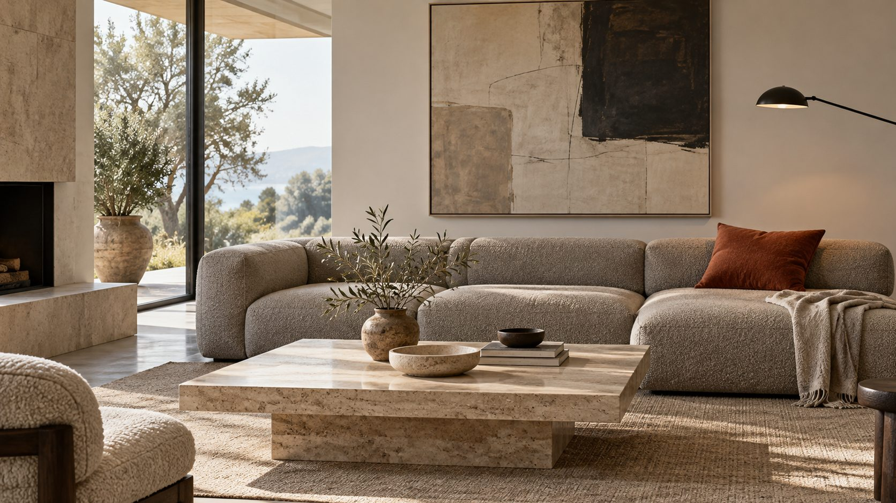

Modern einrichten
Ruhig, klar und trotzdem gemütlich. So wirkt eine normale Wohnung aufgeräumt, ohne kalt zu sein.
Was modern heute heißt.
Gemeint ist meist der minimalistische Stil: bewusste Beschränkung auf das, was du wirklich brauchst und magst.
- Grundidee
- Wenige, gute Stücke statt vieler. Jedes Teil hat einen Platz.
- Formen
- Schlicht und geometrisch, mit klaren Linien.
- Stauraum
- Viel davon, damit wenig offen herumsteht.
- Deko
- Wenig, dafür ausgewählt.
- Farben
- Weiß, Grau und Schwarz, dazu etwas Beige.Kreide#EEEDE9Kiesel#B9B6AETravertin#D6C7ADGraphit#3A3B3C
Sechs Regeln für ruhige Räume.
Lieber ein gutes Sofa als drei Kompromisse. Was du nicht nutzt oder liebst, darf gehen.
Geschlossene Schränke mit glatten Fronten, Körbe und Boxen. Offen bleibt nur, was schön ist.
Wände und große Möbel hell oder grau, dazu ein warmer Ton wie Cognac oder Travertin, der sich wiederholt.
Wolle, Bouclé, Leinen und Holz verhindern, dass der Raum steril wirkt. Ton in Ton ist nicht langweilig, wenn die Oberflächen wechseln.
Deckenlicht allein macht jeden Raum flach. Dazu eine Stehleuchte und eine kleine Tisch- oder Wandleuchte für Abende.
Ein großes Bild und ein großer Teppich wirken ruhiger als viele kleine. Wie groß, sagt der Raum-Rechner.
Raum für Raum.
Wohnzimmer
Der Couchtisch ist halb bis zwei Drittel so lang wie das Sofa und steht 40 bis 50 cm davor. Unter Sofa und Tisch liegt ein Teppich, auf dem mindestens die vorderen Sofafüße stehen.
Essbereich
Eine Pendelleuchte über dem Tisch fasst den Bereich zusammen. Sie hängt 60 bis 80 cm über der Platte, ihr Schirm ist ein Drittel bis halb so breit wie der Tisch.
Schlafzimmer
Nachttische frei halten, Kleidung hinter glatte Schranktüren. Bettwäsche und Vorhänge in wenigen, ruhigen Tönen.
Flur
Geschlossene Garderobe, ein großer Spiegel und ein Läufer, der rundum etwa 15 cm Abstand zur Wand lässt.
Typische Fehler.
Zu kalt
Nur Grau, Glas und Lack wirken schnell wie ein Wartezimmer. Hol Wärme über Holz, Wolle und warmweißes Licht.
Zu leer
Ohne Teppich und Vorhänge hallt es, und der Raum wirkt unfertig. Textilien dämpfen und machen gemütlich.
Zu klein gedacht
Kleine Teppiche und kleine Bilder lassen Möbel verloren wirken. Lieber eine Nummer größer, siehe Raum-Rechner.
Kabelsalat
Sichtbare Kabel zerstören die Ruhe sofort. Kabelboxen, Kabelkanäle in Wandfarbe und eine Steckdosenleiste hinter dem Möbel helfen.
Für den modernen Look.
Ordnung, Wärme und Licht. Die Links führen zu Angeboten bei AmazonAnzeige
Ordnung
Wärme
Welche Teppichgröße passt? Das sagt der Teppich-Rechner.
Licht und Akzente
Häufige Fragen.
Ist modern dasselbe wie minimalistisch?
Im Alltag meint man meist dasselbe: wenige Dinge, klare Formen, ruhige Farben. Minimalismus ist die strengste Form davon. Du musst nicht alles weggeben, damit es modern wirkt.
Wie wird ein moderner Raum gemütlich?
Über Material und Licht. Wolle, Leinen, Holz und mehrere Lichtquellen auf unterschiedlicher Höhe machen den Unterschied.
Passen alte Möbel dazu?
Ja, ein oder zwei Stücke mit Geschichte machen einen modernen Raum persönlicher. Wie du sie findest, steht im Ratgeber Vintage einrichten.
Geht das auch in der Mietwohnung?
Sehr gut, weil der Stil von Möbeln, Stoffen und Licht lebt, nicht von Umbauten. Was du darfst, steht unter Schöner wohnen zur Miete.
Quellen.
Alle 6 Quellen anzeigen
- toom: Minimalismus beim Wohnen toom.de
- Baur Magazin: Couchtisch-Ideen baur.de
- mokebo: Welcher Couchtisch passt zu welchem Sofa (22.06.2026) mokebo.de
- desired.de: Typische Teppich-Fehler (26.04.2026) desired.de
- Kaufland Ratgeber: Höhe der Lampe über dem Esstisch kaufland.de
- Baur Magazin: Teppichgrößen, Läufer im Flur baur.de
Geprüft am 25.10.2026.